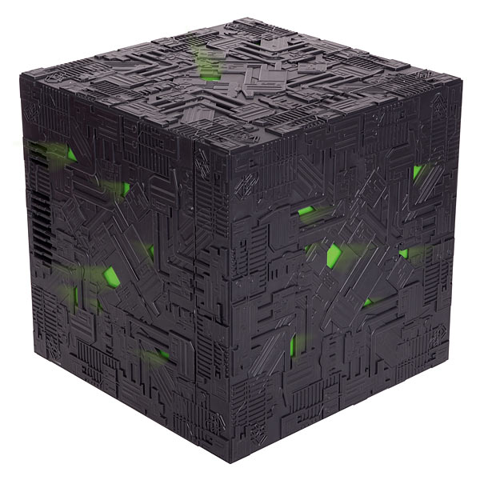
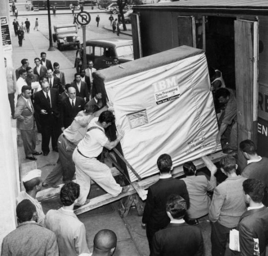

Taming microservices testing with Docker and Arquillian
Aslak Knutsen

- Arquillian Project Lead
- Red Hat
- @aslakknutsen
What is Arquillian Core?
- Testing Platform, not yet another testing library
- Execute from wherever you want
- Flexible and extensible
- Portable tests
What is Arquillian Test?
- Abstraction
- JUnit, TestNG, Spock, Cucumber
What is Arquillian Container?
- Container management
- Deployment management
- WildFly, JBoss EAP, Tomcat, Jetty, TomEE, GlassFish, WebLogic, WebSphere..
Alex Soto
- Arquillian Cube Lead
- CloudBees
- @alexsotob lordofthejars
What is Arquillian Cube?

- Manages lifecycle of Docker containers
- Uses Arquillian remote adapters
- Orchestrates containers
- Not only for Application Servers
- Dropwizard
- Spring Boot
- Netty
- Node
- Vert.x
Bartosz Majsak

- Arquillian Persistence Lead
- Cambridge Technology Partners
- @majson bartoszmajsak
What is Arquillian Persistence?

- Manages lifecycle of Database
- Setup test date
- Verify data sets
Next steps